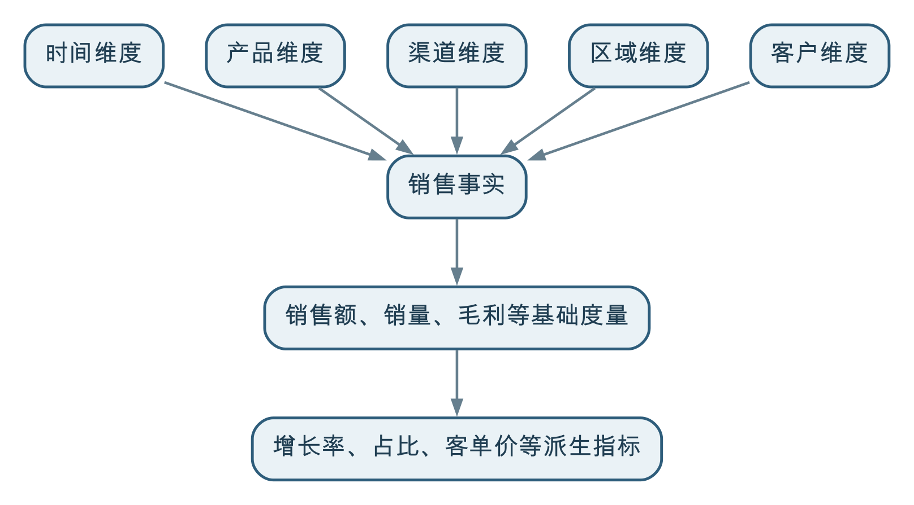

维度建模是稳定、统一和可复用地计算指标的重要基础。它围绕业务过程确定事实的颗粒度，把可度量的业务事实与时间、产品、区域、渠道等分析维度组织起来，使指标能够汇总、比较、下钻和追溯；但指标的业务定义、责任、质量和使用方式，还需要通过指标治理另行明确。
临时统计可以直接从业务表中编写 SQL 完成，并非所有指标计算都必须先建设维度模型。但是，当一个指标需要长期运行、被多个部门反复使用，并支持不同层级的汇总和下钻时，临时查询很容易形成多套口径和重复计算。
维度建模的价值，就是把“每次为一个报表重新取数和计算”，转变为“先构建可以复用的业务事实和分析维度，再在此基础上形成指标”。
以“销售额”为例，公式看起来很简单：
销售额 = 销售数量 × 成交单价但真正计算以前，至少要回答：
如果这些问题没有统一答案，即使每个报表的加法都算对了，最终结果也可能不一致。
所以，指标计算首先不是公式问题，而是业务过程、统计对象、颗粒度、维度和口径问题。维度建模正是用结构化方式回答其中一部分关键问题。
维度建模是一种面向分析的数据组织方法。它通常把数据分成两类：
例如，在销售分析中：
可以用下面的结构理解：

这种结构常被称为星型模型：事实表位于中心，多个维度表围绕事实表。维度继续拆分成多层关联表时，也可能形成雪花模型；多个事实表共享维度时，则可能形成事实星座。
这些名称有助于理解结构，但维度建模的重点不是把图画成星形，而是保证事实颗粒度清楚、维度含义一致、度量可正确汇总，并能够回答真实的分析问题。
业界常用下面四个步骤设计维度模型。顺序很重要，尤其不能在颗粒度不清楚时就开始选择字段和计算指标。
先确定要分析什么业务过程，例如销售下单、付款、发货、退货、库存盘点或费用发生。
业务过程不是某个系统或某张表。一个订单系统可能同时记录下单、付款和退款；一次完整销售也可能横跨订单、支付、仓储和物流系统。建模要根据业务事件划分事实，而不是照搬系统边界。
颗粒度说明事实表中的一行究竟代表什么。例如：
销售事实表中的一行，代表一张已生效销售订单中的一个商品明细行。
也可以定义为“一次发货中的一个商品明细”或“一个门店、一个商品、一天的库存快照”。这些颗粒度都可能合理，但回答的问题不同。
颗粒度是维度建模中最重要的约定之一。颗粒度不清，会导致重复关联、重复汇总和指标失真。例如，订单明细与多次付款记录直接连接，可能把同一笔销售金额重复计算多次。
维度回答“何时、何地、什么产品、哪个客户、通过什么渠道、由哪个组织”等问题。
维度不仅用于筛选，也要支持分类、汇总、对比和下钻。例如：
维度及其层级必须符合实际业务管理方式，不能只根据源系统字段临时拼接。
最后明确在这个颗粒度下可以记录和计算什么，例如销售数量、原价金额、折扣金额、成交金额、税额和成本。
不同度量的汇总规则不同：
因此，模型不仅要保存结果，还要说明度量的汇总性质。错误地累加比率、余额和去重人数，是指标计算中的常见问题。
事实颗粒度明确以后，指标的分子和分母才有可靠基础。例如，“订单数”可以按订单编号去重，“销量”可以汇总订单明细数量，“购买客户数”需要按客户统一身份去重。
如果同一张表混合订单级、订单明细级和支付级数据，指标就可能在连接和汇总中被重复放大。
时间、产品、渠道和区域等维度经过统一后，不同报表才能使用相同分类和层级。集团销售额、区域增长率、渠道占比和产品毛利可以建立在同一组事实和维度之上，而不是各自解释“区域”和“产品线”。
基于明细事实，可以从全国销售额逐层下钻到大区、城市、渠道、产品和订单明细，也可以比较不同时间、区域和产品组合。
如果只保存最终汇总结果，使用者看到异常时无法解释原因；如果每次都从业务系统重新关联，又会产生性能、口径和可追溯性问题。
事实明细、公共维度和合理的汇总层可以被多个指标复用。销售额、增长率、销售占比和平均单价不必分别从源系统重新提取全部数据。
复用不仅节约计算资源，也减少不同团队重复清洗、映射和解释数据的工作。
产品可能调整分类，门店可能变更所属区域，组织架构也会变化。维度模型需要明确历史分析采用“事实发生时的归属”还是“当前最新归属”。
例如，某门店去年属于华东区，今年调整到华中区：
两种需求都可能合理，关键是明确规则并保留必要历史。否则，组织调整会让历史报表在没有新增交易的情况下发生变化。
指标可以从展示结果追溯到派生公式、基础度量、事实明细和源系统。质量规则也可以分层设置，例如检查维度编码是否有效、事实是否缺少产品和渠道、金额是否符合业务约束、数据是否按时更新。
这使“数字不对”能够被定位，而不是只能在报表末端人工修改。
当多个业务过程或数据产品共同使用一个维度，并遵循相同的业务定义、编码和层级时，通常称其为一致性维度，也称公共维度或共享维度。
例如，销售、退货、库存和采购事实都可能使用产品维度。如果四个模型分别维护产品分类，就无法可靠计算：
一致性维度不等于把所有场景都塞进一张无限宽的维度表。它要求核心身份、定义和层级一致，同时允许不同场景拥有自己的专用属性。
常见的一致性维度包括时间、组织、区域、客户、产品、渠道和项目。它们是跨事实、跨报表和跨部门分析的重要连接点，也是维度建模能够降低口径冲突的关键。
维度并不总是静态的。客户等级、产品分类、组织归属和区域划分都会变化。对于历史变化，常见处理思路包括：
只保留最新值，适合不需要分析历史、修正错误或变化影响很小的属性。覆盖以后，过去事实也会按照最新属性解释。
为维度成员保存不同生效时段的版本，使每条事实关联到发生当时有效的维度状态。这适合需要还原历史口径的场景。
某些管理分析既要看事实发生时的组织归属，也要按当前组织重算历史。可以分别保留相应关系或属性，但必须明确查询语义，避免两套口径被无意混用。
在维度建模中，这类问题常被称为缓慢变化维度（Slowly Changing Dimension，SCD）。具体技术实现可以有多种，本书不展开编号化分类。数据治理更关心：什么变化需要保留、由谁确认、生效时间是什么，以及历史指标应怎样解释。
实体建模和维度建模都可能出现客户、产品、设备、地块和组织，但它们的目的不同。
实体模型中的产品，可以为产品维度提供统一身份、标准属性和分类关系；但维度模型仍要根据销售分析需要选择产品属性、层级和历史处理方式。
同样，一个实体并不一定只对应一个维度，一张维度表也不一定机械复制实体结构。维度建模可能为了分析易用性进行适度冗余，也可能在同一事实中让日期维度分别扮演下单日期、付款日期和发货日期等不同角色。
两者的逻辑关系可以概括为：
业务建模：业务怎样运转
实体建模：管理谁、管理什么，对象如何变化
维度建模：发生了什么，数值是多少，从哪些角度分析
指标治理：具体怎样计算、解释、负责和使用从逻辑上说，实体建模先帮助组织认识相对稳定的业务对象，维度建模再围绕具体业务过程组织事实和分析视角。二者有衔接关系，但不能把实体模型直接、机械地转换成星型模型。
不必。对核心业务对象形成基本认识，是维度建模的逻辑前提；但这不等于必须先完成一项独立、完整的企业级实体建模工程，更不需要采用“所有实体模型完成以后，才能开始维度建模”的项目顺序。
维度建模从业务过程和指标需求出发。只要已经能够在当前场景范围内回答以下问题，就可以开始：
这可以称为“满足当前场景的最小实体共识”。它不要求先建立覆盖整个组织、包含所有属性和关系的完整实体模型。
实践中，两类建模通常是迭代推进的：
例如，设计销售事实时，可能发现不同渠道对“产品”和“客户”的识别方式不一致。这时维度建模不能用临时字符串匹配绕过去，而应把问题反馈给实体建模，补充统一身份、来源映射或分类规则。反过来，已经形成的产品、客户和组织实体，也可以为多个维度模型提供稳定标识和公共属性。
因此，需要避免两个极端：
更合理的方式是围绕一个明确场景，先形成必要的实体共识，同时设计事实和维度；在指标计算和业务使用中验证模型，再把稳定的实体、维度和规则逐步沉淀为公共能力。
维度模型提供了可计算、可汇总和可追溯的数据结构，但一项完整指标还需要明确：
例如，“销售增长率”不仅需要本期和同期销售额，还要定义是同比还是环比，按自然月还是财务周期，是否排除取消和退货，使用含税还是不含税金额，以及新开渠道和组织调整怎样处理。
因此，维度建模解决指标的结构基础，指标治理解决指标的业务契约和持续运营。只有模型与口径共同治理，才能避免“底层数据相同，报表数字仍然不同”。
某集团通过直营网店、第三方电商平台、线下门店和经销商销售多个产品。订单、付款、发货、退货、产品和组织数据分散在不同系统中。管理者希望每天查看：
如果各报表直接连接业务系统，常见问题包括：有的按下单统计，有的按发货统计；线上把优惠券计入折扣，线下只统计实收金额；退货在原订单中改数，或在退货系统另记一笔；产品和渠道分类又由各部门分别维护。
首先把销售下单、付款、发货、退货和库存快照识别为不同业务过程。它们相互关联，却不是同一个事实：
如果业务希望计算“确认收入”，还要根据财务规则明确收入确认事件，不能默认等同于下单或收款。
首期销售分析可以将销售事实定义为“一张有效订单中的一个商品明细行”，保存数量、原价金额、折扣金额、成交金额和可追溯的订单标识。
退货则以“一次退货单中的一个商品明细行”建立独立事实，并关联原销售明细。这样既能计算净销售，也能保留退货发生的时间和原因，而不是直接覆盖原订单金额。
库存可以采用“每个仓库、每个商品、每天期末的一条快照”。库存余额不能跨日期简单累加，但可以用于计算期初、期末和平均库存。
销售、退货和库存事实共享时间、产品、渠道、区域、客户和组织等维度：
这些维度需要明确来源和责任，不能由每张报表各自维护一份映射表。
在统一事实和维度基础上，可以形成：
增长率、占比、毛利率和退货率应由基础度量按查询范围重新计算，不能把各门店的比率直接相加或简单平均。
当区域销售额异常下降时，管理者可以从集团指标下钻到区域、渠道、产品和订单明细，判断是销售减少、退货增加、产品调整还是数据延迟。
数据治理还要监控各事实的数据更新时间、维度映射完整率、异常金额和计算任务状态，并把口径变更、组织调整和业务反馈持续带回模型。
这样，维度模型不只是 BI 背后的一组表，而是让每日经营指标稳定生成、能够解释并支持经营行动的数据基础。
先明确要支持哪些经营判断，再识别相关业务过程和事实，不要为了建设一个完整星型模型而收集无明确用途的数据。
用一句业务人员能够理解的话说明一行事实代表什么，并用真实样本验证唯一性。颗粒度尚未确认时，不应急于确定主键、分区或汇总公式。
时间、产品、区域、渠道和组织等公共维度应有稳定标识、业务定义、层级、权威来源和维护责任。无法匹配的事实需要进入质量问题流程，而不是静默归入“其他”。
汇总层可以提升查询效率，但不能只保留最终指标。事实明细、源系统标识、维度版本和计算血缘，是下钻、重算和解释历史的基础。
不同组织的分层名称可能不同，通常需要保留贴源数据，在标准化和明细层统一编码与事实颗粒度，在汇总、语义或应用层形成可复用指标。
维度建模与数仓分层有关，但二者不是同一个概念：分层解决不同加工阶段的职责和依赖，维度建模解决分析数据如何围绕事实和维度组织。
业务过程、维度层级和指标口径变化时，应记录版本、生效时间和影响范围。指标应能追溯到基础度量、事实、维度映射和源数据。
通过 BI 查询、经营会议、异常核对和新指标需求，检查现有事实颗粒度和维度是否仍然适用。没人使用的汇总和指标应退出，反复出现的公共需求应沉淀为复用能力。
星型结构只是结果之一。业务过程、颗粒度、维度语义和度量汇总规则不清，图画得再标准也无法保证指标正确。
事实应围绕业务过程划分。一个系统可能包含多个业务事件，一个过程也可能横跨多个系统。
宽表适合部分消费场景，但如果混合不同颗粒度，容易造成重复计算和更新困难。消费宽表应由清晰的事实和维度生成，而不应代替基础模型。
余额、比率、均值、去重人数等度量有不同汇总规则。必须根据业务含义和分析维度正确计算。
维度还承载业务分类、层级、统一口径和历史变化，是跨事实和跨指标关联的重要基础。
组织、产品和客户属性变化可能影响历史解释。是否覆盖、保留历史或按当前口径重算，需要由业务用途决定。
同一事实仍可采用不同时间、过滤条件和计算公式。指标还需要定义、责任、版本、质量和使用治理。
业务人员必须确认业务过程、颗粒度、维度层级和指标含义。纯技术设计很容易把源系统结构误当成管理口径。
探索性分析可以先验证业务假设。只有经过验证、需要持续使用和复用的事实、维度及指标，才值得沉淀为稳定模型。
维度建模是指标计算的重要基础，因为它先把业务过程组织成颗粒度明确、可以追溯的事实，再用统一的时间、产品、渠道、区域等维度提供稳定的分析视角。这样形成的指标才能可靠地汇总、比较、下钻和复用。
但维度模型不能代替指标治理。模型解决“基于什么事实、从哪些角度计算”，指标治理还要回答“具体怎样计算、由谁负责、何时更新、如何解释和用于什么管理行动”。
从逻辑上看，实体建模先解决“管理什么对象”，维度建模进一步解决“发生了什么、数值是多少、从哪些角度观察”；从实施上看，两者不必采用严格的串行顺序，而应围绕业务场景迭代推进。二者共同把业务认识转化为可管理、可计算和可持续使用的数据，使指标不再是散落在报表中的临时公式，而成为能够支持精细管理的数据能力。
← 上一问：022 实体建模在数据治理中发挥什么作用？ · 返回目录 · 下一问：024 范式建模主要解决什么问题，它与实体建模、维度建模是什么关系？ →